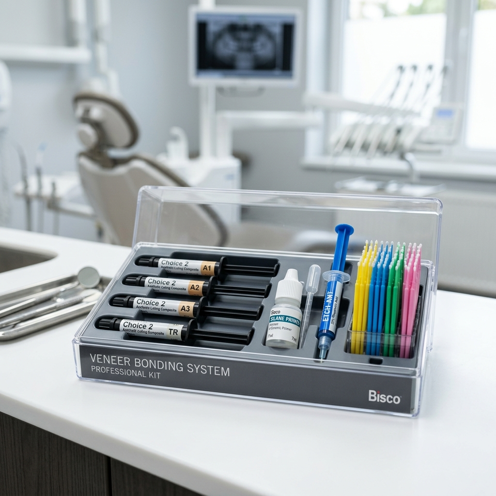

種類與材料選擇
貼片主要材料特性、強度及臨床建議對比
牙齒貼片主要分為樹脂貼片與**陶瓷貼片**兩大類。隨著材料學的進步，陶瓷貼片因其優異的光學特性與長期生物相容性，已成為美學修復的最主流選擇。

圖 1：三種主流陶瓷貼片材料（長石質陶瓷、玻璃陶瓷與氧化鋯）的光學透光度與表面外觀示意圖
💎 陶瓷材料性能多維度對比
| 材料分類 | 抗折強度 | 透光性 | 化學黏著力 | 臨床優選場景 | 狀態 |
|---|---|---|---|---|---|
| 長石質陶瓷 (Feldspathic) | 60 - 90 MPa | 🌟🌟🌟🌟🌟 極佳 | 氫氟酸酸蝕 + 矽烷（極高） | 完全位於牙釉質內的超薄無備牙美學修復 | 美學巔峰 |
| 二矽酸鋰玻璃陶瓷 (e.max) | 360 - 400 MPa | 🌟🌟🌟🌟 優異 | 氫氟酸酸蝕 + 矽烷（高且穩定） | 臨床金標準。前牙美學、齒間縫隙關閉 | 最推薦 |
| 多層高透氧化鋯 (Zirconia) | 600 - 1000 MPa | 🌟🌟 中低 | 依賴噴砂 + 10-MDP（中等） | 重度變色牙遮色、咬合緊咬患者 | 高強度 |
| 直接複合樹脂 (Composite) | 80 - 150 MPa | 🌟🌟🌟 中等 | 傳統牙體酸蝕黏著系統 | 單次快速美化、微小缺損直接修復 | 易染色 |
長石質陶瓷 (Feldspathic)
透光度與邊緣擬真度居冠，可手工堆砌出極致自然的發育溝與乳頭層次，最薄可達 0.2mm，但材料較脆，極度依賴高品質黏著支撐。
玻璃陶瓷 (Lithium Disilicate)
抗折強度達 400 MPa，是強度與通透感的黃金平衡。二矽酸鋰晶體經氫氟酸酸蝕後能與樹脂水泥產生極強的化學與物理結合，脫落率極低。
超透氧化鋯 (Zirconia)
強度傲視群雄（可達 1000 MPa），但因缺乏玻璃基質，無法被酸蝕，主要依靠機械結合與 MDP 底漆。常用於重度變色或重度磨耗咬合區。
牙體預備的宗旨是：在滿足技工端製作空間的前提下，最大程度保留牙釉質（Enamel）。邊緣完全落在琺瑯質內是保障化學黏著強度的關鍵。

圖 2：前牙貼片備牙設計截面圖（展示 0.5mm 唇側均勻磨除量、齦緣 Chamfer 凹槽邊緣及 1.0-1.5mm 的切對接 Butt-joint 設計）
📐 三大切端邊緣設計對比
對接型 (Butt-joint Preparation) 臨床最推薦
切端平整磨除 1.0 - 1.5mm，邊緣終止於舌側切緣頂端。該設計能提供均勻的材料厚度與均勻的咬合應力分佈，有利於技師在切端堆砌具有通透層次的瓷粉。
視窗型 (Window Preparation / Intra-enamel)
切端高度不予磨除，備牙線終止於切緣的唇側頂端。僅適用於切端完好且無顏色異常的患者。缺點是貼片排瓷邊緣過薄，在高咬合力下極易碎裂。
包繞型 (Incisal Overlap / Palatal Wrap)
切端越過切緣向舌側延伸，形成舌側小凹槽。適用於切端需要大幅延長或有缺損的病例，但必須避開舌側的點狀咬合接觸區，防止早接觸導致脫落。
頸部邊緣與鄰接面設計重點
頸部邊緣必須設計為 凹槽形 (Chamfer)，深度為 0.3 - 0.5mm，必須完全位於琺瑯質內。鄰接面若需要關閉齒縫（Diastema），必須採用 Dog-leg (狗腿形) 設計跨越接觸區，將修復體邊緣隱藏至舌側。

圖 3：牙齒貼片美學修復前後對比示意圖（左側為中線齒縫與輕度變色，右側為貼片修復後的完美咬合與色澤）
貼片的長期成功極度依賴化學黏著。黏著是整個治療中技術敏感度最高的步驟，防潮與表面化學處理容不得半點馬虎。

圖 4：在前牙橡皮障（Rubber Dam）嚴格防潮隔離下進行的陶瓷貼片臨床黏著操作示意圖
🔬 陶瓷與牙體表面處理（雙軌並行工作流）

圖 5：顯微鏡下琺瑯質磷酸酸蝕（左，呈現多孔柱狀結構）與玻璃陶瓷氫氟酸酸蝕（右，呈現玻璃基質溶蝕後的微觀孔隙）表面對比示意圖
🌟 陶瓷貼片端處理 (以玻璃陶瓷為例)
- 試戴後清洗：塗佈 37% 磷酸或 Ivoclean 清洗 20 秒，去除唾液醣蛋白，強力水洗。
- 氫氟酸酸蝕：塗佈 5% 氫氟酸 (HF) 於內側，靜置 **20 秒**（長石質則需 90 秒）。
- 超音波震盪 (關鍵)：將貼片置於酒精中超音波震盪 2-3 分鐘，去除白色氟矽酸鹽殘渣。
- 矽烷化與熱烘：塗佈 Silane 靜置 60 秒，以**熱風烘乾**促進化學共價鍵高度縮合。
- 塗布黏著劑：均勻塗佈 Adhesive，吹薄，**嚴禁照光**。
🦷 牙體組織端處理
- 嚴格防潮：強烈建議上橡皮障（Rubber Dam），用牙線套圈（Floss tie）將障邊壓入齦溝下。
- 表面噴砂：使用 27μm 或 50μm 氧化鋁粉進行噴砂，清除多餘臨時黏結劑與生物膜。
- 磷酸酸蝕：37% 磷酸塗佈於牙體面，琺瑯質酸蝕 15-20 秒，牙本質 10-15 秒。
- 溫和乾燥：沖洗 20 秒，保持牙本質微濕潤（Moist bonding），避免牙髓神經脫水。
- 塗布黏著劑：塗佈全酸蝕黏著劑，以乾燥無油空氣吹至極薄，**嚴禁照光**。
Tack-Cure (點照光) 水泥清除絕技
就位後，在貼片正中央點照光 1-2 秒，溢出的樹脂水泥將呈半固化的橡膠果凍狀 (Gel state)。此時可用探針輕鬆將多餘水泥整圈剝離，鄰接點用牙線拉過帶出，能極大縮短手術時間，且不傷牙齦。
高規格的前牙貼片黏著，應選擇純光固化樹脂水泥 (Light-cure only)，因為它不含叔胺催化劑，長期在口內不易發生氧化黃變，且提供充足的固化前操作時間。

圖 6：市面上高端前牙貼片黏著材料套裝示意圖（包含不同色澤的純光固化樹脂水泥注射器、矽烷偶聯劑、酸蝕劑及微刷等組件）
🛒 國際主流品牌性能深度評介
| 品牌與產品 | 固化模式 | 成膜厚度 | 觸變性與手感 | 主要優勢與臨床評語 |
|---|---|---|---|---|
| Ivoclar Vivadent Variolink Esthetic LC |
純光固化 | 約 10 μm | 🌟🌟🌟🌟🌟 卓越 加壓流動性極佳 |
臨床使用率第一。配備專利 Ivocerin 高效無胺引發劑，固化極速且顏色長期極穩定。 |
| Bisco Choice 2 |
純光固化 | 約 12 μm | 🌟🌟🌟🌟 偏硬 定位極佳防移位 |
遮色力與物性頂尖。Milky Bright 色澤是遮蓋氟斑牙或四環黴素變色牙的臨床利器。 |
| 3M ESPE RelyX Veneer Cement |
純光固化 | 約 15 μm | 🌟🌟🌟🌟 黏滑 果凍狀易剝離 |
清理最方便。Tack-cure 後的果凍橡膠彈性極佳，整條撕除手感優異，適合多顆操作。 |
| GC G-CEM Veneer |
純光固化 | 約 5 μm | 🌟🌟🌟🌟🌟 極稀 超低就位阻力 |
超薄無縫密合。高填料但成膜厚度極低，就位力道微弱，適合超薄與脆弱的貼片。 |
陶瓷貼片在口內的呈色是基底、黏著水泥及陶瓷三者相互折射透光的物理綜合體，即光學三明治效應 (Optical Sandwich Effect)。

圖 7：陶瓷貼片光學三明治效應示意圖（展示入射光線如何穿透貼片陶瓷層與樹脂水泥層，並從牙體基底層反射，三者共同決定了最終的牙齒外觀呈色）
🎨 樹脂水泥色澤臨床修正邏輯
Neutral / Translucent (透明)
100% 光學透過，完全不改變基底顏色。適用於備牙背景（ND1-ND2）完美、且貼片本身呈色與目標一致的情況，呈現最和諧的邊緣無縫感。
Light / Bleach / White (美白)
物理性提高明度（Value），降低彩度（Chroma）。適合基底偏黃需要中和提亮，或者患者追求「好萊塢明星白」的病例。
Warm / Yellow / A3 (暖色)
增加彩度，降低明度，補充暖黃色調。能有效中和陶瓷貼片在試戴時顯得發白、發死（Chalky）的生硬感，使其顯得溫潤自然。
試戴糊劑（Try-in Paste）比色核心協定
為避免固化前後折射率改變造成色差，必須在黏著前使用**水溶性試戴糊劑**。塗佈於貼片內側置入牙面，在自然光下確認效果。比色完畢後，必須使用水槍強力沖洗貼片與牙面 20 秒，去油去糖蛋白，方可進行化學黏著。
數位微笑設計 (DSD) 是以面部比例為導向（Face-driven）的微笑美學分析系統，透過精確的顏面水平與垂直中線標定，在術前計算出最符合患者氣質與面部形態的笑容藍圖。

圖 8：數位微笑設計（DSD）軟體系統操作介面示意圖（展示如何在患者大笑臉部照片上繪製水平雙瞳孔線、垂直面面部中線，並精確計算與覆蓋綠色前牙貼片美學模板線）
📐 DSD 核心微笑美學標準
1. 顔面與牙齒中線標定
雙瞳孔連線是水平對準基準。面部垂直中線是垂直基準，上前牙牙縫中線應與之重合（偏差 < 1mm），且其垂直軸向（Angulation）必須與面部中線絕對平行，否則會造成視覺歪斜感。
2. 80% 黃金寬高比
標準正中門齒的寬高度比例為 80%（標準範圍 75% - 85%）。小於 75% 牙齒過度細長，大於 85% 牙齒寬矮。同時，正面觀門齒、側門齒、犬齒寬度應呈 **1.618 : 1.0 : 0.618** 的黃金分割投影視寬。
💻 2D 設計至 3D 口內 Mock-up 精密轉化流
2D 面部微笑框架標定
導入患者正面大笑照，校正雙瞳孔線水平，繪製微笑框架線（Smile frame），根據臉型（卵圓、方形、三角形）選定相應的前牙美學模板。
2D 與 3D 模型光學對齊 (Photogrammetry Alignment)
將 2D 面部美學圖與口內 3D 掃描模型（STL）在 CAD 軟體（如 exocad Smile Creator）中多點對齊，將平面線條轉化為三維 3D 數位診斷蠟型 (Digital Wax-up)。
口內實體 Mock-up 試戴與動態測試
3D 打印實體模型並製作矽膠導板，在口內灌注出 Mock-up。引導患者大笑、說話，動態測試發音（如發 "F", "V" 音確認切端接觸；發 "S" 音確認功能性前伸通道無阻礙），消除早接觸點，確保美觀與功能並存。